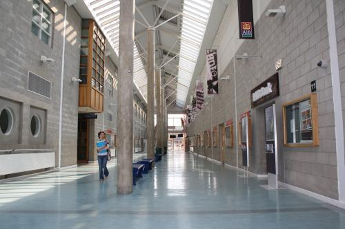

The Ultimate Guide to Creative Multimedia Programming- [All the insider info you'll ever need to know about this course]

Considering a career change? Looking to expand your skills in a huge way? Come with me now on a journey through time and space ... and Creative Multimedia Programming
Written by Catherine PennyThis site is dedicated to provide ALL the best insider information about the HDip in Creative Multimedia Programming at LIT. If you are considering this course I hope this will give a thorough insight into what to expect. I'll provide examples of my own work and experiences during this course which will paint a picture of what to expect.
But first, what is Creative Multimedia Programming? Basically this is the area where creativity and multimedia technology meet. It's the development of new digital products; websites, mobile apps, animation, 3D, VR and other interactive systems. It's the future!

This course is truly awesome! Here's why:
IT'S FREE
The Creative Multimedia Programming course is funded by Springboard so no fees are applicable, but you must meet Springboard Approval. It's a fantastic opportunity to take your career onto the next level and open up whole new areas you can move into. The fact that you will most likely be able to avail of it for free is even more of a bonus.
EMPLOYERS ARE CRYING OUT FOR PEOPLE WITH THESE SKILLS
There are currently a lack of skilled people in the areas that this course covers and it is predicted that the need for people with these skills will rise over the coming years. Good news for graduates! The course was specifically created with this in mind. It is to meet our country's current employment needs in the area of information technology. The IT sector is one of the fastest growing sectors in Ireland. Future employment prospects are good and it is expected that there will be a healthy demand for people with skills in this area.
YOU DON'T HAVE TO BE FROM A TECH BACKGROUND
The course is a postgraduate conversion programme open to people from many different backgrounds outside of information technology. It covers a wide range of subjects essentially preparing the student by providing them with an overall understanding and foundation in the area of multimedia and how it is implemented into social, media and into enterprise environments. It's a challenging, fast-paced course that is quite intensive but the amount that is covered and potential rewards make it well worth the effort.
SO MANY POSSIBLE CAREER PATHS
Multimedia is a huge sector and this course does a great job of covering most of the major areas, exposing you to so many new ideas, concepts and useful skills. These skills are badly needed within the industry and include interaction design, user experience design, visual design, digital video, 3D graphics, database design and multimedia programming, web development and design, web programming, and so on. Students could go on to work in areas like digital marketing, gaming, internet, communications and consumer industries, design agencies, digital marketing, broadcasting, surveillance, etc. The possibilities are huge!
CHALLENGE YOURSELF! GROW YOUR POTENTIAL
It is a very challenging intensive course that is not for the faint hearted but the rewards and personal growth you'll get out of it are totally worth it. It provides you with an academically challenging educational experience that will help you develop the skills needed within the industry. You'll develop a wide knowledge base as well as good project management abilities and an overall awareness of what the industry entails.
WHAT REQUIREMENTS DO YOU NEED?
To qualify you must have a level 8 degree or an equivalent qualification in a non IT area. If you don't have this they will also asses prior learning in other areas and you may qualify if you have relevant experience and training. This is in accordance with LIT's RPL Policy.
HOW TO APPLY
For further information on applying Springboard has more details.
OK, it sounds great, but what is the coursework really like?
YOU WILL BE BUSY
The Hdip in Creative Multimedia Programming is a one year course spread out over 52 weeks and it starts in September. It is divided into three semesters, the third being a 3 month work placement which is a great opportunity to get into the industry. In the first semester contact hours are between 25-28 hours during the day. These take place in a dedicated lab which apart from a few other classes is free for use outside of timetabled hours. A lot of additional study and practical hours are needed to keep on top of the coursework in addition to this but it is totally achievable once you put the work in, I promise.
CONTINUOUS ASSESSMENT MAKES IT MANAGEABLE
The content taught includes on-site lectures, tutorials, practicals, Lab-based lectures, seminars and workshops. Mostly is it graded through continuous assessment; assignments and projects. There are a couple of exams at the end of semester 1 and 2.
LOCATION
It takes place in the LIT Moylish Campus, Limerick.
QUALIFICATION
At the end of the course you'll receive a Higher Diploma, level 8 in Creative Multimedia Programming.
MORE THINGS TO CONSIDER
Corporations and services are looking for creative solutions. The overlap of creativity and technology is highly in demand. People who can both design and understand software will have the skills needed for an industry that is only going to grow as we become a more technological society. If you have a diploma, degree or H.Dip in this area you never know where you might end up. At the very least it will help you make the best cool powerpoint presentations!

LIT is lit!
An overview of the diverse and intriguing subjects on offer
There are quite a lot of subjects and I would love more time to spend on a lot of them, but the course is only a year. Overall you get a good understanding of the subjects but further self-directed study is needed. It opens up many different possible career paths in the technology industry.
For further information on each subject click on the images
Semester 1
Semester one is a pretty busy one, there is a lot to cover, but it's all really exciting and interesting content. In the course literature 6 modules are listed. In addition to this we had Human Cognition and Communication. Semester 1 includes:


Semester 2
Instead of the elective subject we had Human Cognition and Communication in semester 1 which made that semester pretty manic but thankfully eased some of the pressure off of semester 2. Despite there only being four modules, the second semester has a very heavy work load. A lot of this is taken up with the Multimedia Project or FYP. It's technically not an FYP as there is only one year but it sounds odd to call it a YP. Whatever it is, it's pretty huge.


Semester 3
As a part of the Interactive Interface Design project in semester 2 you prepare a CV, online portfolio, Behance and LinkedIn portfolios which help you market yourself to prospective employers.

TIRED OF SCROLLING? GO BACK UP TO THE TOP!